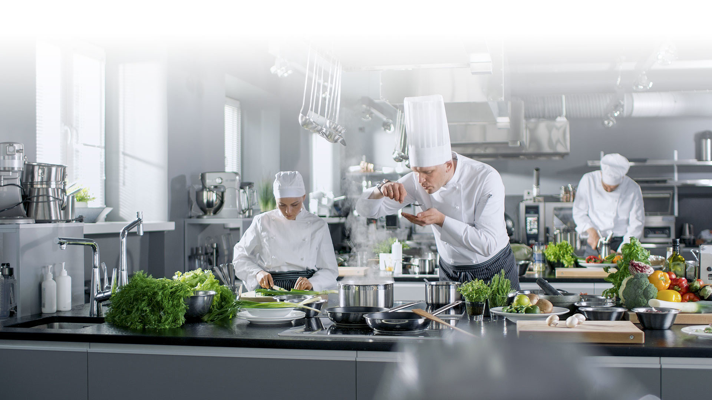

LeBonVivant
CHARME ET AUTHENTICITÉ Le Mesturet est un traditionnel bistrot parisien, situé au cœur de Paris, entre l’Opéra et le musée du Louvre.
Fondé en 2003 par Alain Fontaine à la place d’un établissement historique ancré dans le quartier de la bourse depuis 1883, restaurant le Mesturet, propose une cuisine française qui marie authenticité et créativité. Son décor fait de pierres apparentes et d’objets chinés invite à une parenthèse gourmande décontractée à tout moment de la journée pour : un repas entre amis, en famille ou un repas d’affaires à la carte un déjeuner rapide en formule bar, un événement en salle principale ou salle privatisée.
